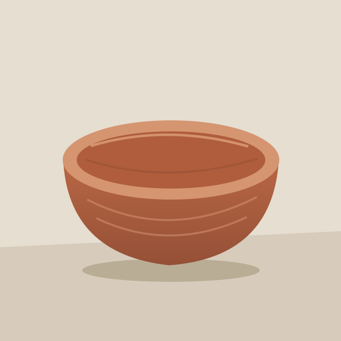
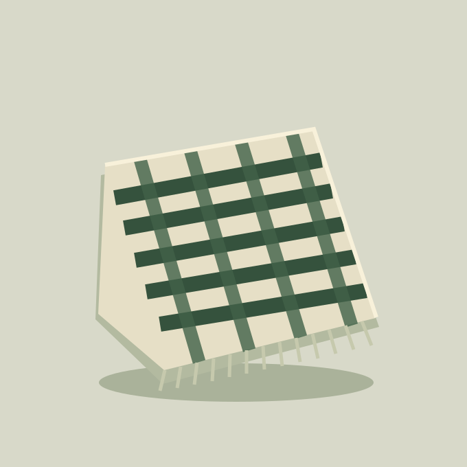

Six fictional objects, illustrated and arranged to demonstrate the theme. Sample prices
are shown for layout only.
6 fictional objects
Table / 01
Ridge cup
$28 AUD
A quiet shape for the first cup of the day.
Explore Ridge cup details
Illustrated stoneware with a deep green glaze and an oversized handle. A fictional
product used to demonstrate catalogue hierarchy, responsive images and native detail
disclosure.
Fictional product · Sample price · No checkout
Light / 02
Loop lamp
$145 AUD
A warm pool of light. A simple, sculptural line.
Explore Loop lamp details
A fictional desk lamp with a curved stem, broad shade and weighted base. The preview
demonstrates product presentation; electrical specifications and safety claims are
intentionally not asserted.
Fictional product · Sample price · No checkout
Carry / 03
Fold tote
$42 AUD
Room for the everyday, without the extra noise.
Explore Fold tote details
An illustrated canvas tote in warm ochre with a small geometric mark. Dimensions,
materials and prices are design fixtures rather than a purchasing offer.
Fictional product · Sample price · No checkout
Paper / 04
Plain notebook
$18 AUD
Some space for a thought, a list, a fresh start.
Explore Plain notebook details
A fictional cloth-bound notebook with a simple grid mark. The design uses original
vector artwork and local assets, without a remote image or font dependency.
Fictional product · Sample price · No checkout

Table / 05
Mesa bowl
$36 AUD
An open form, ready for small daily rituals.
Explore Mesa bowl details
An illustrated terracotta bowl, composed from original vector shapes. The sample
catalogue remains readable with JavaScript disabled.
Fictional product · Sample price · No checkout

Textile / 06
Field throw
$96 AUD
A soft layer. A little colour. An easier evening.
Explore Field throw details
A fictional folded throw with a cream and green woven pattern. The sample is visual
only and does not claim a manufacturing origin, fibre composition or certified
sustainability.
Fictional product · Sample price · No checkout
This is a fictional, read-only catalogue. Products, descriptions and prices are design
fixtures; nothing is offered for sale.
03 / The idea
Good form. Useful function.
A clear hierarchy, room for the product and details that stay out of the way. The
design brings together an original visual identity, a responsive theme and a catalogue
people can explore at their own pace.
A working design preview of the installable classic theme. The WordPress and WooCommerce
runtime are separate from this static page.
01
An original identity
Cream, forest and terracotta. A geometric mark, editorial type and original vector
illustrations form one visual system. System fonts and local assets keep it
self-contained.
02
Designed for the screen
The catalogue moves from three columns to two, then one. Native product disclosures,
visible focus states, a skip link and reduced-motion support make the small
interactions deliberate.
03
Built for WordPress
The classic theme supports custom logos, navigation menus, page content and an
optional WooCommerce catalogue. Dynamic product text, URLs and permitted HTML have
distinct escaping paths.
i
You are viewing the static design preview.Category filters and native
detail disclosures work in this page. It does not run PHP, WordPress, WooCommerce, cart,
checkout or payment processing. The repository contains the separate installable theme
and integration instructions.

 Table / 01
Table / 01